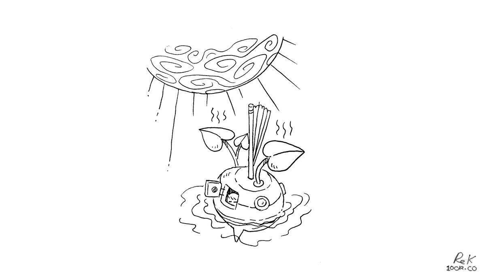

working offgrid efficiently
Introduction

Our traveling studio has operated off the grid since 2016.
For the first 3 years we tested the limits of our space, and at first, it was difficult to create new things, as we had to make time to learn how to solve the underlying problems. Our boat was not just an office, it was also our house and transport. As for us, we were artists, but also had to be plumbers, deckhands, electricians, captains, janitors and accountants.
Our main problems as a studio were internet scarcity, power management, data storage as well as hardware and software failures. Overtime we found ways to balance work, pleasure and maintenance. Here are some of the lessons we learnt.
Power management
Our work schedule is tied to the weather, as we depend on solar energy to power our computers. By looking at the forecast, we can determine when we will get the most work done: consecutive days of sun grant us enough power for video-editing, while overcast days are reserved for low-power work, like writing, coding and planning.
There are times when we must resort to secondary power sources, like our small generator or our engine's alternator, but we tend to prefer to wait for the sun to return. Waiting hasn’t affected our productivity, as we don't adhere to strict 8-hour workdays.
We tend to work only in the morning, leaving us time to pursue other interests in the afternoon. In our old life, we found that the 40-hour workweek kept free-time scarce, resulting in us spending more for convenience, gratification and distraction.
Computers are generally power-sucking vampires. Choosing different software, operating systems, or working from machines with a lower draw (ARM) or even throttling the CPU, are some of the many things we do to lower our power requirements. The way that software is built has a substantial impact on the power consumption of a system, it is shocking how cpu-intensive modern programs can be.
Choosing software designed for low-end PCs is a good solution, it is also possible to throttle processes on your machine by using a ‘throttling controller’. The basic idea is like the throttle in a car, it allows to set the rate at which your system will operate and consume power. Another sure way to save battery is to limit multitasking. Disabling notifications, scripts, auto-playing videos or using internet browsers without opening multiple tabs at once are some of the many ways to achieve this.
Power consumption is also something to consider when choosing a computer. In the evenings, if we need to work on light tasks, we switch to our low-power machines like the raspberry pi. To illustrate the difference in power draw, a Pi4 uses 2.85 W when idle, while a Macbook Pro uses 6-12 W. Raspberry Pis are backups to our main computers, as they are inexpensive and can run off small batteries.
internet

Internet access is the woe of any working nomad. internet is sometimes spotty, and data in some countries is slow, expensive, or limited to small blocks at a time. While circumnavigating the Pacific, we amassed sim cards, pocket WiFis, and have often used connections from businesses on land. Overtime, we found ways to lessen our dependence on the internet, and to save on bandwidth.
With limited access, it is important to use online time wisely. Prior to connecting we make a list of tasks that we must do, such as pushing updates and making backups of our data online. When searching for help online, we disable javascript and use lightweight search engines, such as ddg.gg/lite. When checking social media, we disable auto-playing videos and image previews to save bandwidth.
When we have a reliable internet connection, we gather copies of all the online material we will need. We keep offline versions of entire websites, writing guides, articles and even whole sections of Wikipedia (using wget) If we find ourselves without a connection, we can still solve our problems by using our offline mirrors. By the way, you can download our entire website.
To reduce your bandwidth usage and battery drainage, install NoScript, and uBlock on your browser; or use a text-only browser like Lynx.
We research our destinations ahead of time to make sure we’ll have a reliable connection when we need it. This means we’ll be spending less time in secluded areas, and more time in city centers near a cell tower or WiFi signal. With some planning it is possible to have both paradise and connectivity, we found such a place in Huahine (see internet in paradise) in french polynesia, and again in fiji. Internet access will only get better as far-flung island nations gain purchasing power.
data storage
Hardware failure is common on boats due to the hostile environment. Saltwater is the kryptonite of electronics. This is why it is important to backup data often to avoid losing work. There are advantages and disadvantages with all methods of data storage, but I’ll outline the most useful ones:
Cloud storage: For a fee, you can back up your data online and sync files from your desktop. This method doesn’t eliminate physical storage as data can’t be synced to the cloud without a connection. Offloading data storage to a centralized service is problematic in other ways, because services have rules and owners and processes which can complicate things. For instance, country politics have made it so that Google restricts access to some of its business services in certain countries or regions, such as China, Crimea, Cuba, Iran, Sudan, and Syria. Whatever data you have stored with Google Drive, if traveling to any of these countries will not be accessible. As conflicts arise, more countries can end up on that list. We keep documents we don’t need regular access to on the cloud, with copies on hard disks.

Hard copies. Paper is evidently a stable and widely accessible material, unlike digital devices which are subject to breakages and obsolescence. There's a good reason books and other documents from centuries ago are still readable today. We like to keep printed copies of websites and other online reference materials, such as grammar guides for writing, or language manuals for coding. Our to-do lists and calendars are also on paper. Keeping data like this means we always have access and aren't limited to our computer's battery. We protect hard copies from moisture and rot, we keep documents in plastic sleeves, or sealed up in plastic boxes.

External hard drives: A hard drive is the best balance of practical and reliable storage. However, hard drives are rated for a limited number of read/write cycles, and can be expected to fail eventually. To prevent data loss due to HD failure, it’s a good idea to store the same data across multiple hard drives.
Offline databases: Keeping an offline collection of websites on computers or HD ensures constant access, and reduces the energy associated with re-loading them repeatedly. It’s possible to save web pages with most browsers by selecting File > Save Page As. To access the page offline, click on the HTML file. Another option is to mirror entire web sites using command-line tools. We keep offline databases full of notes on a variety of subjects to refer to when there’s no internet.
For those who need a vast quantity of reference materials, it's possible to setup an internet in the box on your boat. In short, it permits you to browse through the World’s Free Knowledge (Wikipedia, Khan Academy, OpenStreetMap, E-Books and many others) while offline. You can install an internet-in-a-box using very diverse hardware, like on a Raspberry Pi or on a terabyte HD with a built-in hotspot. This system was originally designed for students with restricted internet access and people in remote areas of the world not served by broadband. You can buy one, or better yet create a digital library filled with content tailored to your needs. This might be especially useful for sailors who homeschool.
Keeping files on the cloud, on hard drives and hard copies gives our floating studio the redundancy required to ensure reliability.
software

Software has a big impact on productivity, they need to be reliable and fast. Those that require heavy updates, that have a high CPU usage and that need frequent connectivity to function are problematic for us. Much of the software on the market is designed by people living on the grid with unlimited access to internet. Tools locking up at sea, asking for a connection to continue working don't float on a boat. Adobe products are a good example, as they require an internet connection periodically for subscription validation. If away from big cities, you may open your computer in an atoll to find that you no longer have access to the tool you need to get things done. Choosing a tool that doesn't require a subscription is essential for working nomads that don't have a reliable connection.
Have a look at cpulimit to learn how to throttle running software and control the battery drainage rate.
In our first year, we struggled to download 10gb software updates on slow Polynesian internet. Processor-intensive software or apps is a strain on limited power and bandwidth, but it doesn't have to be that way. The way developers write them can affect the power consumption of the resulting product. Chat rooms and bare bones text editors aren't supposed to be process-heavy, and yet the popular communication platform Slack requires outrageous amounts of ram and CPU to function. This is because Slack is embedding the entirety of Google Chrome in their app. Making software this way is costly to off-grid users, or those on slow connections, but luckily there are many alternatives. See TinyTools and Bloatware Alternatives.
Our computer batteries should not need to grow ever larger only to support these bloatwares, nor should we need to add extra solar to power them. Just as you would look at the nutritional content of food products at the grocery store, find out how much energy your apps are consuming.
hardware

Computers are subject to water intrusion and saltwater corrosion, but with some care they can survive in a normal marine environment. We solved most of the problems by cleaning external connections often, and by storing them in a sealed box with some desiccants after each use. The main issue with computers on boats is that it is difficult to source parts when they break. To make matters worse, many modern machines have non-replaceable batteries, proprietary storage, and soldered-in RAM. The parts that fail the most are power connectors, external connections and batteries.
Leaving a port with spare parts is a good tactic, but leaving with backup PCs is even better. There are many good inexpensive computers on the market, like notebook processors (Pinebook, EeeBook) and single-board computers (Raspberry Pis, Pine64). We carry 3 extra raspberry pi computers as backups to our main setup, as they are inexpensive and small. These computers run on lower voltage, which lower overall power consumption. By consuming less power, the system will be less expensive to run, but more importantly, it will run much longer on existing battery technology.
Carrying a spare battery isn't a great idea as you may not use it right away, and that its literal age also affects performance. Computers are rated for a limited number of cycles. If you drain the battery completely and recharge it every day, it'll be spent after 3 years. Keeping a laptop battery fully-charged is important as it draws a lot more power at half-charge, the last few percentage points are much lower wattage to float/top it off. Enabling the various power states in your computer settings can also reduce power consumption, which in turn spares your battery. If available, enable 'eco-mode' or 'low power mode'. We suffered battery failure on multiple laptops, read about it in tools ecosystem.
When parts fail on our boat we repair them, and we do the same for our PCs. Nowadays it is commonplace to trash a device when it stops working, contributing to the growing problem of e-waste in the world. Replacing broken components is important, as manufacturing a new PC makes a far bigger ecological footprint than manufacturing a new replacement part. If you must get a new PC, look for product longevity, including upgradability, repairability and modularity. In today's climate, making electronics last longer is crucial.
Conscientious living

In the 60s, there was a group of French writers who would create works using constrained writing techniques, like replacing every noun in a text with the seventh noun after it in a dictionary. They did this to inspire ideas and creativity. Living and working aboard a sailboat was for us a constraint, it liberated our imagination by eliminating possibilities.
We work less, by keeping our needs small. We both cannot deal with working within rigid schedules, and we both know that we find our best selves when working close to nature.
The things we struggled with when setting up our studio, are also what taught us the most. Our frustrations with software resulted in us building our own. With limited internet, we became more independent. When hardware failed, we learned to fix them. Lacking power, we had to re-imagine our studio and projects, to calculate usage and optimize our setup to do more with less. It was a transformative experience for us, and it can be for you too if you try and work according to resources and the weather.
This article was published on August 23rd 2020 on Noonsite